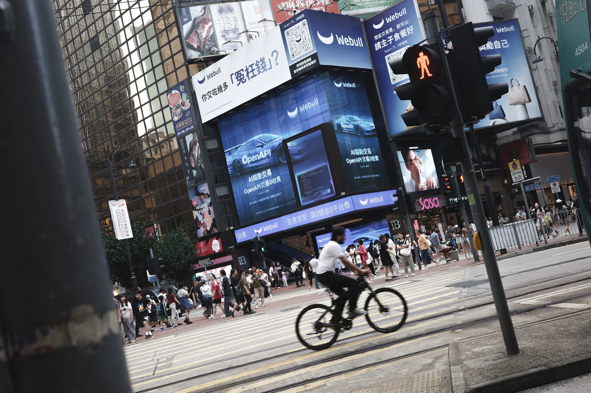
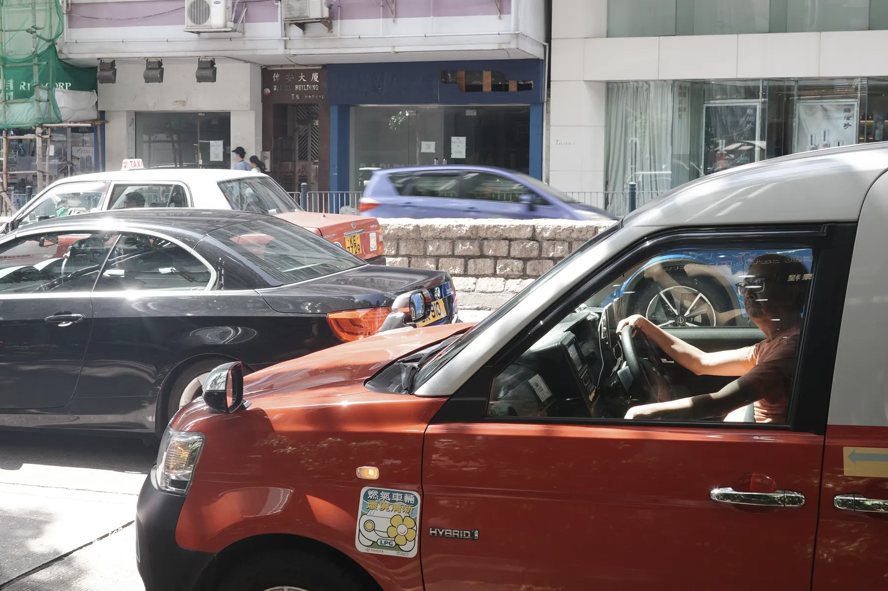

核心影像作品
main video work
MV类 / 音乐影像
One Last Kiss
音乐影像作品，围绕歌曲情绪与画面节奏展开。内容包含人物片段、环境镜头、节奏剪辑、调色处理与字幕/画面排版。
MV类作品 / One Last Kiss
在线播放 / video preview
Project Categories
作品分类索引。
以下按照作品内容分为 MV类、影像部分、人像摄影类、动态视觉类与活动宣传类，包含音乐影像、静态影像、人物肖像、动态图形与宣传视频素材。

人像摄影类
Portrait Fragments
包含棚拍人物肖像、外景人像与置景拍摄，画面围绕人物状态、光线层次、空间关系与情绪氛围展开。
棚拍肖像 / 外景人像 / 置景拍摄 / 基础布光 / 人物引导 查看人像摄影档案动态视觉类
Visual Experiments
包含艺术性与风格性的动态视觉探索，围绕动态图形、美术构成、版面节奏与视觉气质展开，可延展至宣传海报、活动主视觉和动态视觉物料。
艺术风格探索 / 动态设计 / 美术构成 / 宣传海报 / 视觉物料 查看动态视觉档案活动宣传类
Event & Promo Work
包含活动记录、门店展示、访谈片段与节庆宣传素材，内容以现场流程、空间展示、人物采访和短视频剪辑为主。
活动记录 / 门店展示 / 访谈素材 / 节庆宣传 / 短视频剪辑 查看活动宣传档案Personal Resume / Capability
个人能力掌握
以下为目前可独立承担或协作完成的视觉工作范围，覆盖图像、影像、动态视觉、AI辅助创作与项目落地。
01
视觉审美与品牌包装
具备美术基础与稳定审美判断，能够围绕产品、项目或品牌进行视觉包装、内容策划与执行推进，形成统一的风格方向和传播呈现。
02
图像与影像拍摄
拍摄范围覆盖人像、景观、纪实、艺术风格及商业场景，可在摄影与摄像之间完成基础执行与画面控制。
03
广告片与MV制作
熟悉广告片、宣传片及MV类项目流程，能够参与创意概念、脚本撰写、拍摄执行、剪辑调色与后期整理。
04
时尚与趋势感知
对影像风格、流行视觉和时尚趋势保持敏感，能够将趋势语言转化为可执行的画面方案。
05
专业软件与实时视觉
熟练掌握 Premiere Pro、After Effects、Photoshop、TouchDesigner、Blender 等工具，具备从素材处理到视觉创意落地的综合执行能力。
06
AI辅助创作工作流
能够将 AI 用于视觉参考生成、脚本与分镜辅助、素材整理、图像处理和创意迭代，提高方案推演与制作效率。
联系方式：微信 zemsurn
可提供完整视频链接、项目说明、原始素材说明与进一步面试沟通。